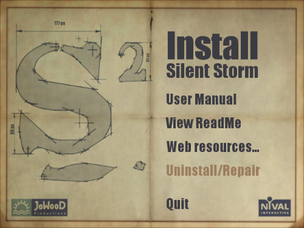

What's included
DVD box version:
- 2 CDs
- User manual
- DVD box
- Registration card
Installation procedure
Please insert CD1 into your CD drive; installation screen
with menu should appear automatically. Note: Autorun function may be
disabled on your computer. In that case double-click on Autorun.exe file in
the root directory of CD1 to call up the autorun program menu.

The right screen section offers a menu providing access
to the game and various game resources:
- Install Silent Storm — starts the game installation wizard
(this menu item will change to «Play Silent Storm» after the installation);
- User Manual — link to the electronic game user
manual;
- View Readme — link to the text file with the latest information
about the game and advice on resolving technical problems;
- Web resources... — links to web pages of the game's developer
and publisher and the game's home page;
- Uninstall/Repair — launches the game installer program in the
mode which allows to uninstall the game or to add/remove various components
(this menu item is disabled if the game is not installed yet).
- Quit — quits the autorun program.
To start installation wizard, select «Install Silent Storm» and follow on-screen
instructions. The installer will prompt you to select the game directory; its default setting is
C:\Program Files\JoWooD Productions\Silent Storm.
The installation program will check your DirectX version and prompt you to update it
if it's lower than 9.0 (you can also install DirectX manually from \DirectX9 directory on CD1).
The installer will create «Silent Storm» program group in
Windows Start menu. There you'll find shortcuts to run and uninstall/repair the game,
as well as links to Readme file with the latest information about the game, JoWooD Productions and
Nival Interactive web-sites and the «Silent Storm» home page.
Uninstalling the game
To completely uninstall the game, select «Uninstall (repair) game» shortcut in
Silent Storm program group in Windows Start menu or click on «Uninstall/Repair»
in the autorun program.
Launching the game
Please insert CD1 into your CD drive. If autorun function is not disabled on your computer the autorun
program menu will appear. To launch the game, click on «Play Silent Storm».
You can also launch the game selecting shortcut «Play game» in «Silent Storm»
program group in Windows Start menu.
When you launch the program for the first time, it will
analyse your system and make the necessary changes to your graphics settings.
To start the game, click on the first command in the menu — «Play».
After the Intro video clip you'll see the Main menu screen.
Please see below for more on the gameplay, the interface and the game's features.